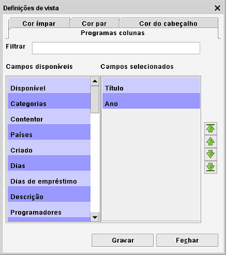

Definições da vista Tabela
Caminho de menu: Definições > Definições de vista
As definições de vista permitem-lhe alterar as cores e a informação mostrada na vista.
Colunas
Aqui pode definir que campos são mostrados na tabela e em que ordem.

à esquerda na janela estão os campos disponíveis. à direita estão os campos atualmente mostrados na tabela.
Faça duplo clique em qualquer campo (coluna) para o mudar de lado.
Ao cimo encontra um campo de filtragem. Pode utilizá-lo para encontrar rapidamente um dos campos disponíveis (uma vez que a lista
pode ser bastante longa).
Use as setas verdes à direita na janela para definir a ordem dos campos. Clique num campo e depois clique na seta com a
direção desejada. Pode mover o campo para cima, para baixo, para o início ou para o final da lista.
Cores
Defina a cor dos campos pares e ímpares ou altere a cor do cabeçalho.